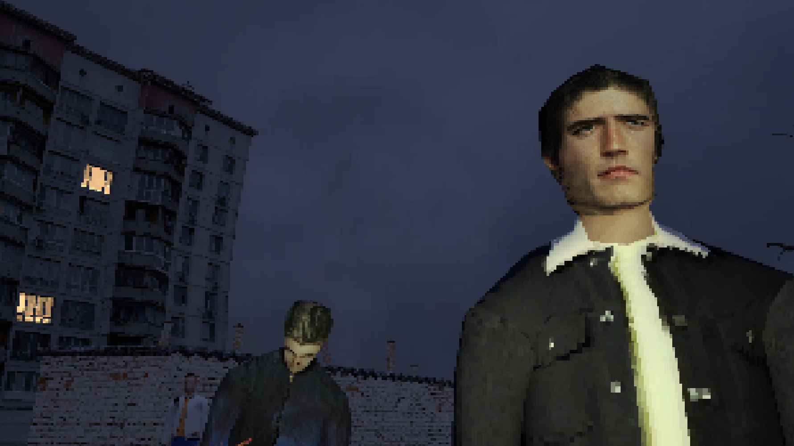
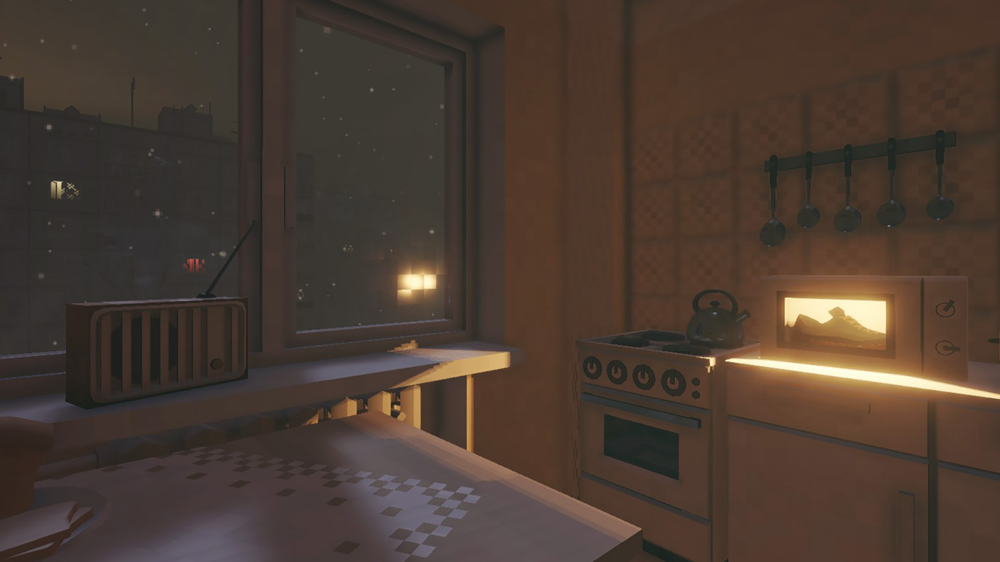
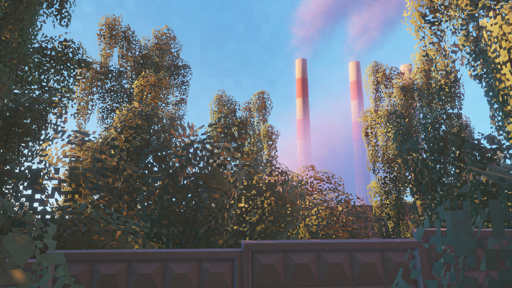
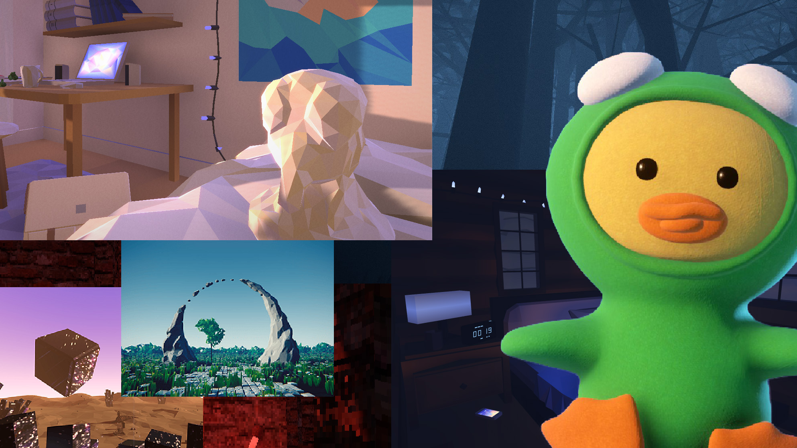

Independent Game Developer

A contemplative night walk through the places
that feel both familiar and unreal · 2023

A small apartment, a long winter, and snow
that never seems to stop · 2019

Quiet summer afternoons, sunlit leaves,
and a book waiting to be written · 2022

Smaller prototypes that didn't become
full games · see on itch.io
Alexander Ignatov a.k.a. sad3d is an independent game developer creating quiet, melancholic games. Rather than chasing spectacle, he creates slow-paced interactive experiences that invite players to observe, wander, and discover the extraordinary within the familiar.
He has released three commercial games on Steam in collaboration with Ilia Mazo: It's Winter, Routine Feat, and Neyasnoe.
Alongside making games, he has spent a decade training and working as a physician —
a parallel path that leaves its mark on everything he makes.
Currently based in Yerevan, Armenia.
Stumble and dance through a bleak post-Soviet city in this excellent new first-person explorer
Rock, Paper, Shotgun · 2023
Why Half-Life’s City 17 was pivotal to gaming’s post-Soviet obsession
The Verge · 2020
It's summer in Routine Feat, from the maker of It's Winter
Rock, Paper, Shotgun · 2019
The It's Winter and Routine Feat developer explains Russian sadness and powerful moods
Rock, Paper, Shotgun · 2019
Explore, clean, and cook on a Russian night in It's Winter
Rock, Paper, Shotgun · 2019
Беседа с авторами «Неясного» — об искусстве, свете и пакетах в небе
Skillbox Media · 2023
Создатели игры «Неясное» про будущее инди, лишние смыслы и цифровую зависимость
Звук Медиа · 2023
Энтузиазм и вера в идею: на чем построен саунд-дизайн в российском игропроме
Звук Медиа · 2023
Кто делает инди-игры в России
Нож · 2020
Почему игра про russian toska вообще не прикол
Афиша · 2019
10 деталей симулятора панелек «ШХД: ЗИМА», о которых вы могли не знать
Афиша · 2019
Беседа с разработчиком It's Winter, игры о панельках и зимней тоске
DTF · 2019